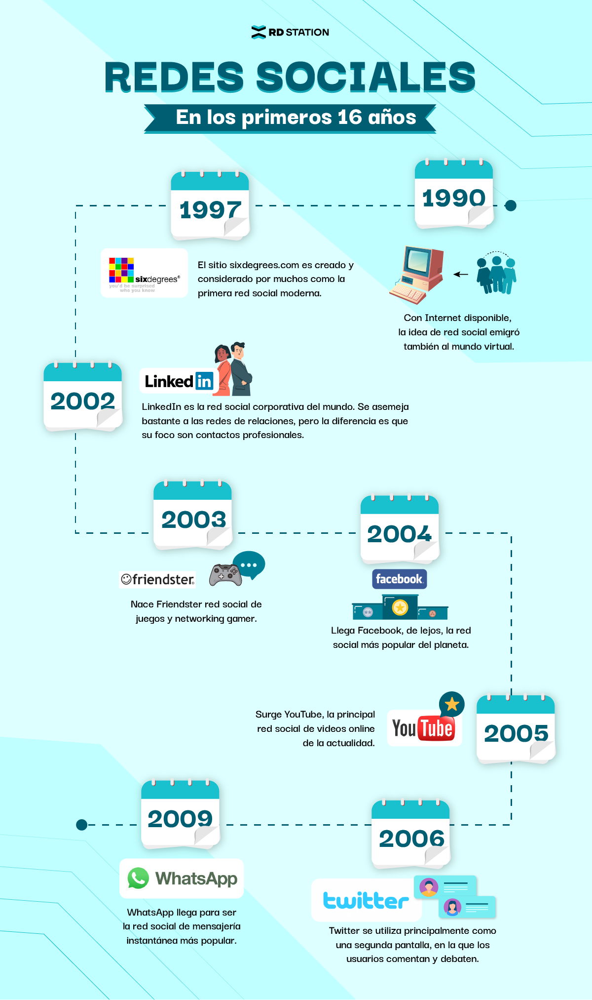

El uso de redes sociales ha sido absorbido por personas en todo el mundo y hoy ya es parte de la rutina. Esto hizo de esos espacios un lugar donde las marcas y empresas también quisieran estar para interactuar con sus prospectos y clientes, trayendo posibilidades muy positivas, como:
Las redes sociales, en el mundo virtual, son sitios y aplicaciones que operan en niveles diversos como el profesional, de relación, entre otros pero siempre permitiendo el intercambio de información entre personas y/o empresas.
